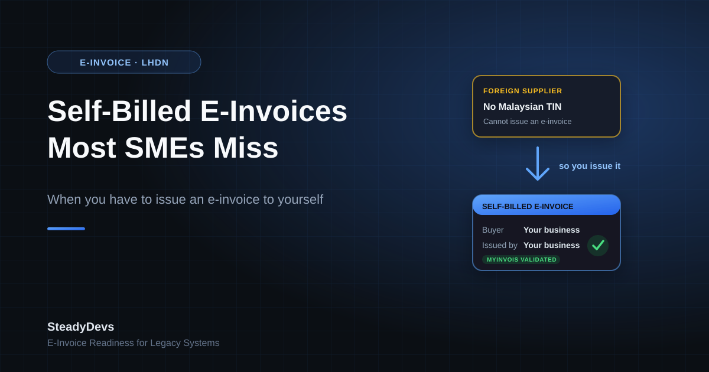

Self-Billed E-Invoices: The LHDN Rule Most Malaysian SMEs Don't Realise Applies to Them
Most Malaysian businesses approached e-invoicing with one question: how do we send e-invoices to our customers? That's the visible half of the mandate, and it's where the effort went—integrating with MyInvois, validating fields, handling rejections.
The half that gets missed is the mirror image: transactions where the buyer, not the seller, has to issue the e-invoice. LHDN calls these self-billed e-invoices, and they apply to situations far more ordinary than the name suggests. Businesses that assumed self-billing was an edge case for large corporates are often surprised to find they've been accumulating unreported transactions.
Why this matters: a self-billed e-invoice isn't optional paperwork. Without it, the expense may not be substantiated for tax purposes—which turns a documentation gap into a deduction you can't claim.
What a Self-Billed E-Invoice Actually Is
Normally the seller issues the invoice and the buyer receives it. A self-billed e-invoice inverts that: you, as the buyer, create the e-invoice recording the transaction, because the supplier either can't or isn't required to issue one.
You are effectively documenting your own expense in a form LHDN can validate, standing in for a supplier who isn't part of the e-invoicing system.
The Situations Where It Applies
The common triggers are more everyday than most owners expect:
- Payments to foreign suppliers. Overseas vendors aren't subject to Malaysian e-invoicing, so imported goods and services—including the software subscriptions almost every business now pays for—typically require a self-billed e-invoice from you.
- Payments to individuals who aren't in business. Freelancers, part-timers and casual service providers operating outside a registered business often can't issue an e-invoice, so the buyer documents it instead.
- Commissions, incentives and agent payouts. Where you pay a commission to an agent or dealer, the payer commonly issues the self-billed document.
- Certain claims and disbursements. Expense reimbursements and similar items where no supplier invoice exists in the required form.
- Selected transaction types named by LHDN. Including specific categories such as profit distributions and certain interest or prize payments.
The pattern is consistent: whenever value flows out of your business to someone who isn't going to produce a validated e-invoice, the documentation obligation shifts to you.
A quick way to find your exposure: list every recurring payment leaving your business that does not arrive with a Malaysian tax invoice attached. Foreign SaaS subscriptions, cloud hosting, overseas advertising spend and freelancer payments usually surface immediately.
What Your System Needs to Support
Here's where a lot of legacy systems fall short. Most accounting and ERP systems built before the mandate have a single invoicing path: sales out, purchases in as recorded documents. Self-billing needs something different.
1. Creating an outbound document for an inbound transaction
Your system has to generate a properly structured e-invoice where your own business appears as the buyer and a third party—often foreign, often without a Malaysian tax identification number—appears as the supplier. Many systems simply have no screen for this.
2. Handling supplier identification edge cases
Foreign suppliers won't have a TIN in the usual format, and individuals may not have a business registration number. The submission still has to satisfy validation, using the identification rules LHDN specifies for these cases. Hard-coded local-format validation is a frequent breakage point.
3. Submitting and storing the validated document
The self-billed e-invoice goes through MyInvois validation like any other. You need the validation response, the unique identifier and the QR-bearing document stored against the expense record, not sitting in a folder somewhere.
4. Keeping it out of your sales figures
A self-billed e-invoice is an expense document that happens to be issued by you. If it leaks into revenue reporting because it was built on top of your sales invoice module, your accounts will disagree with your tax position.
The Practical Approach for a Legacy System
You don't necessarily need a new system. In most of the legacy .NET and SQL Server setups we work with, self-billing is handled by adding a parallel document path rather than rebuilding invoicing.
- Identify which of your payment flows trigger self-billing. Usually a short list: foreign subscriptions, overseas services, freelancer payments, commissions.
- Decide where the document originates. Often the purchase or payment entry you already capture—so the self-billed e-invoice is generated from data staff are entering anyway, not typed a second time.
- Add a document type flag rather than a new module. The same submission plumbing that sends your sales e-invoices can send self-billed ones, with the party fields reversed and the type set accordingly.
- Relax identification validation for non-Malaysian parties. Follow LHDN's rules for foreign and individual suppliers instead of your existing local-format checks.
- Store the validated result against the expense. So that when a query comes, the substantiation is one click from the transaction rather than a manual search.
- Run a back-check on the period since the mandate applied to you. Find the transactions that should have had self-billed documents and work out, with your tax agent, how to address them.
Not Sure If Your System Handles Self-Billing?
We work with Malaysian SMEs running legacy .NET and SQL Server systems to close e-invoicing gaps without a rebuild—including self-billed documents. Get an honest assessment of where you stand.
Talk to UsCommon Mistakes We See
- Assuming foreign purchases are out of scope. The supplier being outside Malaysia is exactly what creates the obligation, not what removes it.
- Treating self-billed documents as internal paperwork. They're submitted and validated through MyInvois like any other e-invoice, not filed locally.
- Recording them as sales. Built on the sales module without a separate document type, they end up inflating revenue.
- Doing it manually in the portal and never reconciling. Portal-entered documents that don't flow back into your system leave your records and your submissions permanently out of sync.
- Leaving it to year-end. These are transaction-time documents. Reconstructing months of them at once is far more expensive than issuing them as you go.
The Bottom Line
Self-billed e-invoices catch businesses out precisely because they don't look like invoicing. They come out of your payments, not your sales, and they involve suppliers who are entirely unaware of Malaysian e-invoicing rules.
The fix is rarely dramatic. Most systems need a second document path, not a replacement—but it does need to be deliberate, because nobody is going to chase you for an invoice you were supposed to write to yourself.
Frequently Asked Questions
Generally yes—payments to foreign suppliers are one of the most common self-billing triggers, and software and cloud subscriptions are the ones most businesses overlook because the amounts are small and recurring. Confirm your specific situation with your tax agent.
That's the expected case. LHDN provides identification rules for foreign suppliers and for individuals without business registration. The problem is usually your system's validation, which often assumes a local format and rejects anything else.
For low volumes, yes. The risk is reconciliation—documents created in the portal that never make it back into your accounting records leave your books and your submissions disagreeing, which is painful to unwind later.
Your self-billing obligations follow the same phase timing as the rest of your e-invoicing obligations. If you're already issuing e-invoices to customers, assume self-billing applies to you now.
Usually less than owners fear, if the system already submits e-invoices. The submission plumbing is reused; the work is in a new document path, relaxed party validation and storing the validated result against the expense. It's typically a scoped project, not a rebuild.
Address it deliberately rather than quietly. Identify the affected transactions, discuss remediation with your tax agent, and close the system gap so it stops accumulating—an ongoing gap is a much bigger problem than a historical one you're fixing.